객체 지향 프로그래밍 언어로서 보안성이 뛰어나며 컴파일한 코드는 다른 운영 체제에서 사용할 수 있도록 클래스(class)로 제공된다. 객체 지향 언어인 C++ 언어의 객체 지향적인 장점을 살리면서 분산 환경을 지원하며 더욱 효율적이다.
[네이버 지식백과] 자바 [Java] (컴퓨터인터넷IT용어대사전, 2011. 1. 20., 전산용어사전편찬위원회)
Python
문법 구조가 간단, 명확하고, 많은 시스템 호출과 풍부한 라이브러리(모듈), 다양한 윈도우 시스템용 인터페이스 등을 포함하고 있어 생산성이 높은 강력한 언어이기도 하다. 반면 실행 속도가 상대적으로 느리다는 단점이 있다. 다른 프로그래밍 언어와의 호환성이 높아, 빠른 속도가 필요한 부분은 C, C++ 등의 언어로 개발하여 융합할 수 있다.
[네이버 지식백과] 파이선 [Python] (IT용어사전, 한국정보통신기술협회)
Database
정보를 일원화(一元化)하여 처리를 효율적으로 수행하기 위해서 서로 관련성을 가지며 중복이 없는 데이터의 집합을 유지하는 것을 데이터베이스(－, database)라고 한다. 그리고 데이터베이스를 관리하는 시스템을 데이터베이스 관리시스템(DBMS: Database Management System)이라 한다.
[네이버 지식백과] 데이터베이스 [Database] (학문명백과 : 공학, 김태달)
JavaScript
HTML 문서의 정적이고 단조로운 한계를 극복하기 위해 넷스케이프(Netscape)사가 만든 livescript가 그 이름을 달리 한 것으로서 브라우저 자체에 내장된 해석기능을 이용한 클라이언트(client) 기반의 일종의 스크립트 언어이다. 작고도 빠르기 때문에 웹문서를 동적으로 꾸밀 때 가장 널리 쓰인다.
[네이버 지식백과] 자바스크립트 [JAVA script] (NEW 경제용어사전, 2006. 4. 7., 미래와경영연구소)

HTML5
HTML5는 웹 문서를 만들기 위한 기본 프로그래밍 언어 ‘HTML(Hyper Text Markup Language)’의 최신규격이다. HTML5는 엑티브X(Active X)를 설치하지 않아도 동일한 기능을 구현할 수 있고, 특히 플래시(flash)나 실버라이트(Silverlight), 자바FX(JAVA FX) 없이도 웹 브라우저(web browser)에서 화려한 그래픽 효과를 낼 수 있다.
[네이버 지식백과] HTML5 (매일경제, 매경닷컴)

CSS
기존의 HTML은 웹 문서를 다양하게 설계하고 수시로 변경하는데 많은 제약이 따르는데, 이를 보완하기 위해 만들어진 것이 스타일 시트이고 스타일 시트의 표준안이 바로 CSS이다. 간단히 스타일 시트라고도 한다.
[네이버 지식백과] CSS [cascading style sheets] (두산백과)
Git
깃(Git /ɡɪt)은 컴퓨터 파일의 변경사항을 추적하고 여러 명의 사용자들 간에 해당 파일들의 작업을 조율하기 위한 분산 버전 관리 시스템이다. 소프트웨어 개발에서 소스 코드 관리에 주로 사용되지만 어떠한 집합의 파일의 변경사항을 지속적으로 추적하기 위해 사용될 수 있다. 기하학적 불변 이론을 바탕으로 설계됐고, 분산 버전 관리 시스템으로서 빠른 수행 속도에 중점을 두고 있는 것이 특징이며 데이터 무결성, 분산, 비선형 워크플로를 지원한다
[위키백과]
Docker
리눅스 재단이 발표한 ‘2014 가장 인기 있는 클라우드 오픈 소스’에서 2위를 차지한 도커는 리눅스 컨테이너 기술을 자동화해 쉽게 사용할 수 있게 하는 오픈소스 프로젝트다.
[네이버 지식백과] 도커 [Docker] (ICT 시사상식 2015, 2014.12.31)